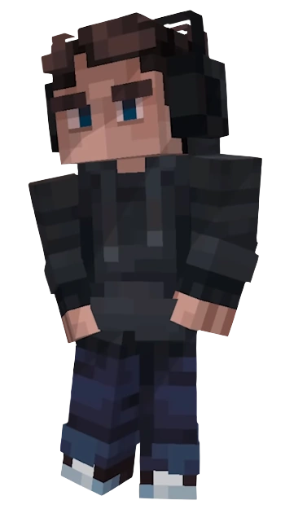

Дилан
| Дилан |
|  |
| Инфо |
| Полное имя Дилан |
Прозвища
|
| Гендер Мужской |
| Вид Автоматон |
| Рост 178 см |
| Личное |
| Семья Абилка (питомец) |
| Никнейм @DevMagician |
| Деятельность |
|
Род занятий Студент Lucky Charms University (ранее) |
|
Факультет Социология и социальная информатика |
«Только по делу».
Дилан — персонаж из сезона Последняя Реальность. Учился в одном университете с Лололошкой, а также жил в одной комнате с ним в общежитии.
В 60 серии его тело оказалось в руках Джоди Арист, поэтому он из серии к серии меняет своё местоположение, пока для него не будет найдено новое тело. На данный момент (с 67 серии) находится в виде программы в своём ноутбуке, а также в телефонах Лололошки и Ричарда.
Внешность
Дилан — светлокожий брюнет, чьи волосы уложены в сайд парт. Имеет глаза тёмно-голубого цвета. Ходит в тёмно сером худи, в капюшоне которого он часто закрывается, джинсах, чёрных кедах с белой подошвой. Носит крупные чёрные наушники.
Характер
Его можно коротко описать японским термином хиккикамори — социально изолированный человек. Общается сухо и только по делу, предпочитает общение в Пейджере, но не чаще одного раза в сутки. В основном проводит время, сидя в ноутбуке или в компьютере, и не любит, когда его беспокоят. Не особо беспокоится за нормы морали, готов совершать незаконные вещи. Из-за повышенного скептицизма в его изначальных настройках спокойно принял факт, что является автоматоном.
Любопытство — пожалуй, та самая черта Дилана, способная пересилить его интровертность и склонность сидеть на одном месте. Он всегда стремится узнавать что-то новое, развиваться и совершенствоваться. К тому же он всегда за любой движ, будь то вечеринка или поход в лес.
Он довольно умный и всегда мыслит логически, что неудивительно, ведь он учится и подрабатывает программистом. Несмотря на приведённые Лололошкой доказательства, отрицал происходящее, думая, что главный герой просто сумасшедший, но позднее оказалось, что это тоже было заложено в его поведение. После вмешательства в свой код может нормально обсуждать с Лололошкой происходящее, заодно он подкрутил себе некоторые настройки и тем самым увеличил харизму.
Способности
- Программирование: его специальность — архитектор компьютерных систем.
- Взлом замков с помощью отмычек: имеет 56 уровень навыка.
- Начиная с 45 серии имеет доступ к своим настройкам.
- Мастерство розыгрышей.
- Умеет управлять кораблём (катером).
- Начиная с 73 серии, Дилан научился транслировать разные события (например отключение сигнала острова) через смартфон Лололошки.
Интересные факты
- Скорее всего, его имя и внешность являются отсылкой на персонажа Дилана Лениви из игры "The Quarry".
- Dylan — это также название одного из языков программирования.
- Если ввести его тег в Телеграмме, то появится профиль человека с таким же именем и аватаркой, как у него в Пейджере. В номере телефона также содержится число 993.
- С помощью оборудования из бункера получил доступ к телефонам студентов, а следовательно к телефону Лололошки и его заметкам.
-
В его коде и коде Дженны есть паттерн, в котором можно разглядеть надпись "JDH". Как предположил
Дилан, он отвечает за "фильтры восприятия".
- Если верить чертежам в кабинете бывшего дома JDH, то Дилан является "мозгом".
- Ему нравится Абилка — кошка, которую приручил Лололошка. С ней ему веселее на душе, и она не мешает ему работать или играть, "в отличие от людишек". Ухаживает, кормит и проводит с ней время больше, чем главный герой.
- Совершенно не умеет готовить, не может сделать даже яичницу.
- В 10 серии он сказал культовую фразу из игры Hotline Miami 2: Wrong Number.
- Дилана бесят открытые тюбики зубной пасты.
- Дилан программирует на языке Python.
- У Дилана была девушка.
- С 64 по 66 серию находился в теле автоматона, похожего внешне на Уолтера Уайта — главного героя телесериала "Во все тяжкие".
- Дилану не хватает по утрам зазываний Карла в универ.
- Дилан любит мясные блюда, из которых ему очень нравится тар-тар.
- Дилан в 76 серии сказал, что сходит с ума в симуляции. Ему не хватает своего тела,вкусовых рецепторов и Абилки. Дилан скучает как можно клацать по клавиатуре и обзывать людей в играх. Дилан считает, что даже тело "деда" было лучше.